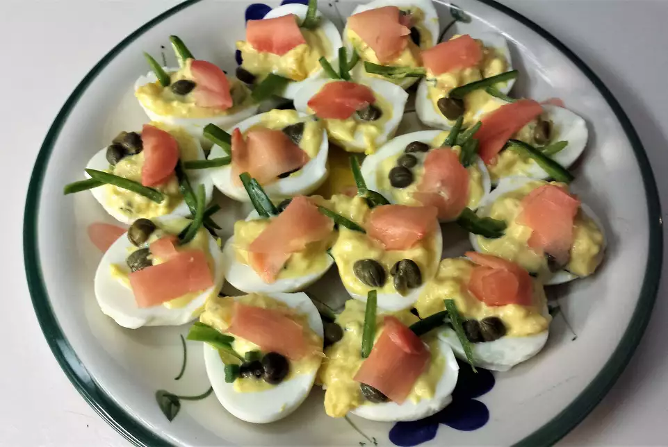

spicy japanese wasabi deviled eggs (16 servings)

my homeade deviled eggs
INGREDIENTS
- eggs
- mayo
- green onions
- rice wine vinegar
- wasabi paste
- salt
- fresh pea shoots
- pickled ginger slices
STEPS
- boil eggs then peel
- slice eggs in half, remove yolks and place in bowl
- mash yolks until smooth, mix with mayo, vinegar, and wasabi paste
- add salt
- spoon yolk mixture into egg whites, garnish with pickled ginger and pea shoots